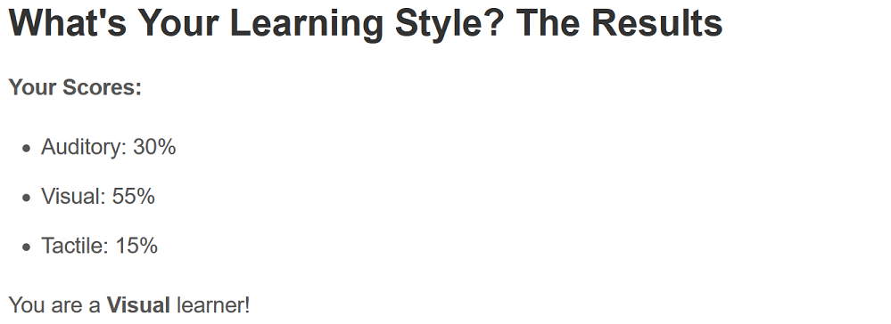
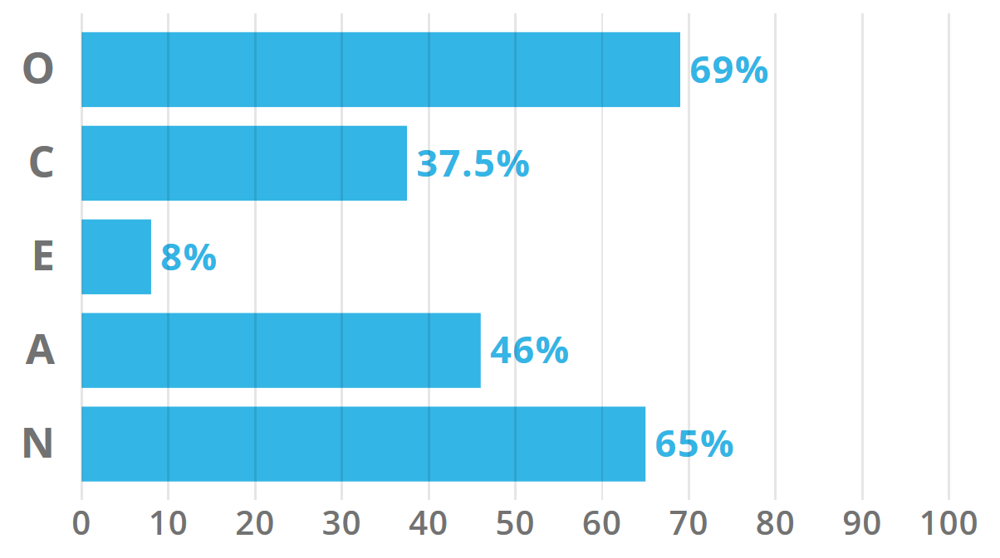
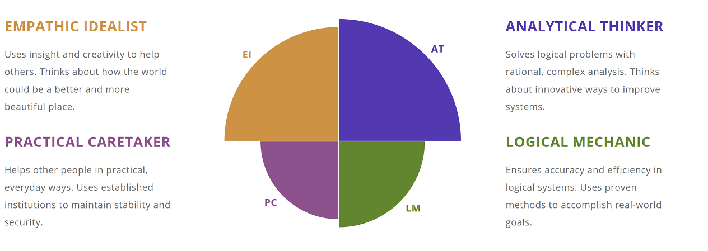

Personal Information
Student Number: s3781407
Email Address: s3781407@student.rmit.edu.au
My name is Alex Chan and I am from Bairnsdale, a small regional town in eastern Victoria. I was born in Australia and raised by my mother and father who both emigrated from Hong Kong to Australia. While English is my first language, I can speak Cantonese at a conversational level with my relatives, but I do not have ability to read or write in it. During Years 11 and 12 I completed Computing and Software Development subjects as a part of my VCE, while they were not strictly prerequisites to my university degree, having a sound understanding of the basics in computing was important. I have been studying at RMIT since 2019, currently it is my second year studying a Bachelor of Computer and Network Engineering. I have taken Introduction to Information Technology as an elective subject. Ever since I was a child, I have enjoyed playing single-player video games, such as open-world RPGs and indie games. I also have a large interest in computer hardware, especially surrounding gaming PCs. Anything from reading about the latest hardware news to building and customising my own desktop computer. I also own a dog, an 8-year-old Papillon named Radar who always loves to eat and sleep. Currently I do not participate in any sport, however during my high school years I joined my school’s clay target gun club and would participate in competitions around the state. It was a unique experience and I learned a great deal about how to handle and maintain firearms in a responsible manner.
My Background
Interest in Information Technology
I took this subject as an elective to broaden my knowledge about information technology, where I have had an interest in computers and technology since I was young. During my later teenage years, I started to learn more about computer hardware as I was planning to build my own gaming computer. This was a very engaging and interesting hobby to take up as I learnt about CPU and GPU specifications and how they impact performance in software applications, as well as obtaining practical experience in assembling computer components. The information I have learned from this hobby has helped me grasp technical knowledge about the electronics inside a computer and the process of installing an operating system and how to monitor performance using benchmarking software. Since beginning my degree, I have pursued work experience at a local IT business located in my hometown. Here I have gained a deeper insight into IT as a career by witnessing how business servers are maintained and monitored. This ranges from cybersecurity such as preventing ransomware attacks, data management such as creating backups and restore points, as well as web hosting for a business’s own website. I have also gained practical experience in repairing personal devices, a few examples include: A Windows Surface laptop that had its boot drive encrypted, hard drives with a damaged PCB and actuator arm as well as replacing faulty SATA cables in a desktop computer.
I chose to come to RMIT to study as it appealed to me and believe they can provide me the necessary qualifications in order to become employed once I graduate. I attended the open day prior to choosing RMIT and saw a wide range of interesting pieces of technology on display. Another factor was the convenience in travel as I would stay near the city throughout the year, meaning that travel time was only about 15 minutes. This makes it far more affordable and easier to attend classes that were in the early morning or later in the evening.
In this subject specifically, I expect to grasp the fundamentals of information technology and apply this knowledge into my future career, particularly the group work aspect, as being able to work cooperatively in a workplace environment with other colleagues is a vital skill in any workforce. Overall, in my engineering degree I hope to gain sound theoretical and practical knowledge in electronic hardware design and gain the ability to program devices, while also gaining knowledge about networking and understanding how information is sent across a network of digital devices. This will hopefully allow myself to demonstrate my technical capability as an engineer to employers once I complete my degree.
Ideal Job
Computer Network and Systems Engineer
The roles included in this career include working with the development, configuration and analysis of computer systems and architecture, implementing LAN and WAN networks as well as servers and the technical maintenance of these systems. The job also requires knowledge in network configuration to optimise performance and to test newly implemented computer and server systems. The job appeals to me as it closely relates to the course I am currently undertaking. Throughout my university enrolment, I expect to build on my current knowledge on these particular topics and develop skills in understanding how to perform these tasks.
The expectations in this job include five years of industry experience, understanding how a professional workplace operates, having strong communication skills with clients, and technical knowledge surrounding networking, server management and virtualisation software. It is assumed that a relevant university degree is also required to understand the theory of technology surrounding this type of work.
Personally, I have work experience at a small IT business, where I have gained basic knowledge about the inner workings of server management, data backups and configuring networking devices. I also have experience working with customers, as I have been working casually at my family restaurant and at another café. By continuing my studies, I aim to further my knowledge about these particular areas and to achieve a proper tertiary qualification for this job, as well as through personal projects, ranging from programming small computing devices such as a Raspberry Pi, to setting up a home server to learn about real applications of server maintenance.
Personal Profile



The results of Myer-Briggs Test indicate that my personality leans towards introversion, rationality, and being analytical. This suggests I enjoy looking at things with a meticulously detailed approach, finding the minor details in things and dissecting information into logical steps. The Learning Styles Test indicate I prefer to absorb information visually, whether it be graphical representations, diagrams or even reading sections of text. It suggests I use images to remember ideas and have a preference to use written communication over speaking with others. The Big Five Personality Test shows that my qualities reflect openness the greatest, indicating that I enjoy think about abstract and more creative ideas. The lack of extraversion in this test, shows I personally prefer to work at my own pace and accomplish my own tasks.
When working in a team environment it is very important to have a group with a diverse set of skills, some may have the ability to design and write code well, so they can focus on the technical aspects of the task, Whereas others might be better suited to writing out the content into easily comprehendible paragraphs, or some might have the skills to research new ideas and gather information easily. I believe it is essential that when forming a group the members have a mixed set of strengths and skills to bring to the table so that the group as a whole can benefit from different ways of thinking.
Project Idea
The project idea I have chosen is called Hardware Analytics and Data Capture (HADC), which is a device that plugs into a computer and monitors its performance while running software. This device can be used to gather useful information about particular components, such as CPU, GPU and RAM usage, framerate, clock speed and temperature. The device can display this information on its own screen, rather than to have this information overlayed on the primary monitor which would cover UI elements. The device can also display information graphically on its screen to show when a particular component is in heavy use or idling, which can assist in identifying which components of a computer is facing bottlenecks. This data can be stored and analysed to compare with other models and brands of components to identify its relative performance among other components.
The community of computer hardware enthusiasts has a broad online presence in today’s interconnected world. Many hobbyists who show an interest in computer gaming or content creation are seeking to build their own custom gaming or workstation desktop computers, and benchmarking hardware is an essential part of the process. Having a dedicated external device to monitor and analyse information about their computer would streamline the process for many consumers and help them understand which specific components are lacking in performance or are underutilised. The ‘plug and play’ nature of this device makes this very portable, allowing it to be easily taken to different premises to test multiple devices.
The tools required to implement this concept into a physical device would require the physical hardware of the device, such as a Raspberry Pi to run the data and analytics software and a 5-inch led screen to display the information. The device would be connected via a USB-A to USB-C cable, as it has been the predominant standard used in modern devices. The data and analytics software would be programmed in C++ as I have personal experience in programming in this language for software to hardware communication.
Key skills required for a success development of this project would be to have a sound understanding of programming in C++ and understand how to develop a fully functioning program that captures data from another software reading from the hardware. The device would need to be built physically, so soldering skills and prototyping on a breadboard will need to be proficient. The device will have a display, so good UI design skills are also required.
The ideal outcome for the project is to have a fully functioning final product able to perform as specified. The core aim of the project idea is to have a simple all in one solution where consumers would purchase a device for their own personal use, or for professionals to take it with them when diagnosing problems with a computer’s hardware or software. This device would be sold to individual customers or to businesses in bulk, across computer hardware stores and online wholesale websites. The concept of having future iterations of newer models with more features would be considered if the initial product is received well.